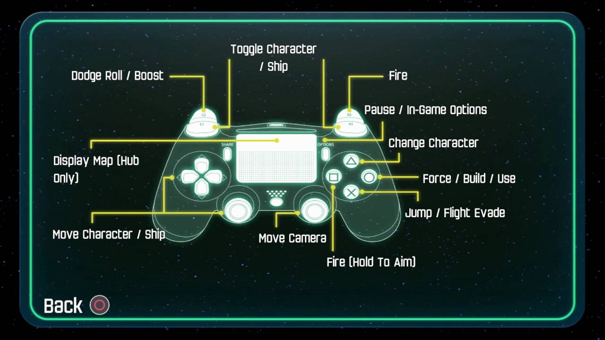

The (Problematic?) Learned Skill of Gaming 👩🏫
I’ve been surrounded by games for as long as I can remember. Visiting my dad’s old childhood bedroom, I flipped through his old torn up notebook, filled with different chapters about his favorite Atari games and his high scores and his learned strategies and techniques to help beat them. I watched my older siblings play through games on their DS and Wii and PCs. My family gathered often for a night of competitive board games.
I, by no means, am an expert gamer. I probably am not even considered “good” at most video games. Still, though, my experiences and my environment have allowed me to intuitively interact with games in a way that feels natural. On the other hand, I’ve watched some of my friends who have never touched a game in their life, or even my mom, who did not grow up playing games. And I’ve observed that it can be so baffling to watch someone struggle with something that seems so obvious. Partly inspired by this week’s game design lecture about consciousness, I wanted to explore the unconscious learning of gaming a little further.
Some Examples 🎮
What do I mean by “unconscious learning”? One example is the use of physical controls. Many video games, across a variety of genres, share the same widely accepted controls for the same in-game actions. The most obvious, for gaming with a controller, may be using the left joystick, or the left D-pad, to move around. In third-person games, this is usually accompanied with camera control via the right joystick. Of course, different platforms have different traditional control schemes too- on a PC, this would be WASD for movement, and mouse for camera control. Not to mention other actions, such as jumping usually being done with the spacebar.
If you’re used to playing games, this list of controls might seem redundant or obvious. You could walk up to most games and immediately know the basics of control, without any instruction. The muscle memory has been unconsciously built into you over a history of engaging with multiple games over a period of time. But, these assumptions cannot be made by people who may not have prior experience with games. The baseline controls will feel foreign, not even adding in any special movements or actions required by a specific game.
This idea expands beyond control schemes, too. Learning how a game mechanic works to solve a puzzle, the idea of completing main and side quests, navigating a mini-map, and so on, are all shared concepts that a player will learn as they have more and more experience with video games. Even analog games, like a board or card game, require ways of strategic thinking, practice understanding a list of complex rules, or other skills that might be hard or unintuitive for someone who isn’t used to playing games.

Control scheme for "LEGO Star Wars: The Force Awakens (2016)
Is this is a problem? 😬
Unconsciously developing these skills can be great! It allows players to pick up a variety of games with little effort, allowing them more energy to focus on the special mechanics or story that makes a game unique. But, at the same time, they might cause a “barrier of entry” towards those who don’t have that past experience or skill.
For example, I remember sitting on the couch trying to watch my mom play Lego Star Wars on the Nintendo Switch. She couldn’t move her character and move the camera at the same time- instead walking forward a little bit, pausing to rotate the camera, continuing to walk some more, and an overall painful process of start and stop to even maneuver through her environment in the most basic way. This experience doesn’t seem very “fun”, does it?
I can imagine that some people who are interested in games may feel like its too hard to start, just because the skill required can be hard to get a hang of at first, and therefore very frustrating. Unfortunately, I can’t think up a better solution to this than starting with simpler games like a 2D platformer, and then slowly working your way up to more complex, fast-paced 3rd person games. I’d love to do some more research and explore how games slowly teach skills to their players- especially assuming that the player isn’t a traditional gamer with past experience. Games should be accessible to all- even if you have no prior experience!
If you’re still interested… 📺
If you’re interested in this topic, I’d recommend the YouTube video “What Games Are Like For Someone Who Doesn't Play Games” by Razbuten. I stumbled upon it a few years ago, which made me interested in this concept in the first place. It’s about a man who observes his wife play through variety of video games without any gaming experience.
by Malaya Heflin
Last updated 1/21/2026